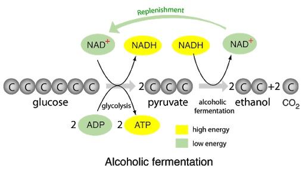
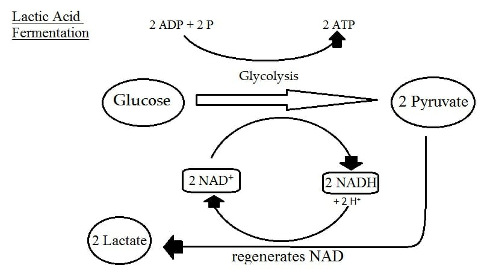

It is described as the process in which fairly large amount of energy is release in the presence of oxygen from the breakdown of food substances.
This process starts in cytoplasm and continues in the mitochondria of cell . Each
glucose molecule releases 38 ATP molecules . Water & glucose are waste products.
The energy released is utilised in other life processes.
2) Anaerobic Respiration
It is descibed as the respiratory process in which small amount of energy is release in absence of oxygen from breakdown of food substance .It takes place in yeast ,Bacteria & in human molecules only two molecules of ATP is released.
Types:-
i) Alcholic Fermentation :-
It is process of incomplet breakdown of sugar in two ethanol and carbondioxide is release energy.This process occurs mainly in yeast which is used to produce Beer,Wine,etc.

ii) Lactic Fermentation:-
It is process of incomplete breakdown of sugar into lactic acid + energy in some bacteria and in our muscle cell.
* In our muscles vigorous exercise glucose is metabolised to form lactic acid and then fatigve and muscle cramp occur .This usually takes place when small amount of ATP stored in muscle is used up for immediate need if energy.

Over all process of breakdown of glucose in both aerobic and anaerobic respiration:-
# Different Stages of Respiration
Respiration consist of two steps -
i) External Breathing -
a) Breathing-
It is a process of taking in required gas and giving out unrequired gases.It has two types Inhalation and Exhalation .For Eg.Human beings, takes oxygen and gives out carbondioxide.
b) Exchange of gases -
It involves diffusion of oxygen from longs to blood and carbondioxide from blood to lungs.In Plants exchange takes place through stomata of leaf with the exhange takes place in environment.
ii) Internal Breathing -
It is gaseous exchange between arterial blood and cells .
Cellular Respiration:-It is a process of breakdown of glucose on other respiratory substrate in cell to produce energy for performing varoius functions.
# Respiration in Plants
# Mechanism Of Gaseous Exchange in Humans
The phenomenon of taking in oxygen is termed as Inhalation and of giving out carbondioxide is termed as expiration.
Breating or Gaseous exchange in human involve three steps-
Inhalation :-
When we breathe in,air passes through trachea and ribs move up and flatten the diaphragm due to which chest cavity becomes larger .As result air is sucked into lungs and fills the expanded alveoli.
Gaseous Exchange -
Haemoglobin blinds with the oxygen and carries it along blood in body .As blood passes through the tissue of body , oxygen from the blood diffuses into the cell ,and carbondioxide which is produced as waste products during respiration is diffuses into blood and is carrird back to lungs for expiration.
Expiration-
Ribs move down and diaphragm becomes dome shaped decraesing the chest cavity .Thus , pusshing the air ou from lungs.

 This process starts in cytoplasm and continues in the mitochondria of cell . Each
glucose molecule releases 38 ATP molecules . Water & glucose are waste products.
The energy released is utilised in other life processes.
This process starts in cytoplasm and continues in the mitochondria of cell . Each
glucose molecule releases 38 ATP molecules . Water & glucose are waste products.
The energy released is utilised in other life processes.

.jpeg)
.jpeg)